Magnon spectra and noncollinear magnetism
Exercise 1: FM Heisenberg nearest-neighbour spin chain
Collinear adiabatic magnon spectra and S(q,w)
The following tutorial shows every step necessary to calculate adiabatic spin wave spectrum and dynamic structure factor S(q,w) through the simple example of the ferromagnetic spin chain. Notice that the classical magnetic ground state of the Hamiltonian defined in this example is where every spin have the same direction. The global orientation of the spins is arbitrary since the Hamiltonian is isotropic. Files are found in HeisChain folder. Some blocks of the ìnpsd.dat` file are inlined in the following to highlight the key words that control calculation of adiabatic magnon spectra and calculation of the dynamic structure factor.
Crystal & magnetic structure
Using the lines below with the indicated files, the crystal and magnetic structure are readily available, so that a 1D Heisenberg chain is created. The chain extends over 100 sites along the z direction. Have a look on the posfile and momfile. The nearest neighbor ferromagnetic exchange coupling is contained in the jfile.
simid HeisWire System name
ncell 1 1 100 System size (in terms of unit cells)
BC 0 0 P Boundary conditions (0=vacuum,P=periodic)
cell 1.00000 0.00000 0.00000
0.00000 1.00000 0.00000
0.00000 0.00000 1.00000
Sym 1 Symmetry of lattice (0 for no, 1 for cubic, 2 for 2d cubic, 3 for hexagonal)
posfile ./posfile Position file
exchange ./jfile Exchange file
momfile ./momfile Moment file
do_prnstruct 1 Flag to print lattice structure (0=off/1=on/2=print only coordinates)
Mensemble 1 Number of samples in ensemble averaging
Initmag 3 (1=random, 2=cone, 3=spec., 4=file)
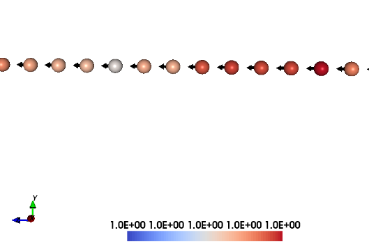
Crystal and magnetic texture

Primitive and reciprocal lattice vectors in simple cubic (sc) lattice

Simple cubic lattice 1st Brillouin zone
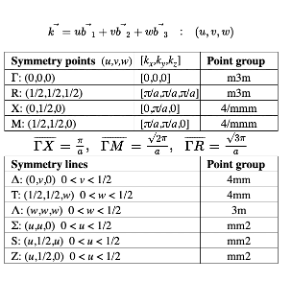
High symmetry points
Calculation of spin wave spectrum
We calculate the spin wave spectrum (in this case, a collinear adiabatic magnon spectra) at the list of Q points contained in the qfile. The spin wave spectra is calculated as excititions from the T=0 K ferromagnetic ground state.
do_ams Y Collinear Adiabatic magnon spectra
do_magdos N Generate magnon density of states
qpoints F Flag for q-point generation (F=file,A=automatic,C=full cell)
qfile ./qfile Path along the high symmetry points in the reciprocal space
Spin dynamics and sampling of the dynamic structure factor
Using the lines below, the systems is equilibrated in spin dynamics simulations to be in thermal equilibrium with a small temperature T=0.001 K.
ip_mode S Initial phase parameters
ip_nphase 1
20000 1.0e-3 1e-16 4.0
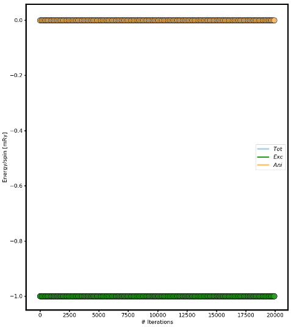
Fig 2. Energy versus number of iterations.
The dynamical structure factor is sampled in spin dynamics simulation at the same temperature T=0.001 K as used in the initial phase used to thermalize the system. The time step is 1 fs, and a small damping 0.0010 is used.
mode S S=SD, M=MC
temp 1.0e-3 Measurement phase parameters
damping 0.0010 --
Nstep 40000 --
timestep 1.000e-15 --
do_sc Q Measure spin correlation
sc_window_fun 2 Choice of FFT window function (1=box, 2=Hann, 3=Hamming, 4=Blackman-Harris)
do_sc Q Measure spin correlation
sc_window_fun 2 Choice of FFT window function (1=box, 2=Hann, 3=Hamming, 4=Blackman-Harris)
sc_nstep 5000 Number of steps to sample
sc_step 8 Number of time steps between each sampling
Plotting adiabatic magnon spectrum spectra and the dynamic structure factor
Use the UppASD graphical interface asd_gui or the postQ.py script to plot the adiabatic magnon spectra and the dynamical structure factor.
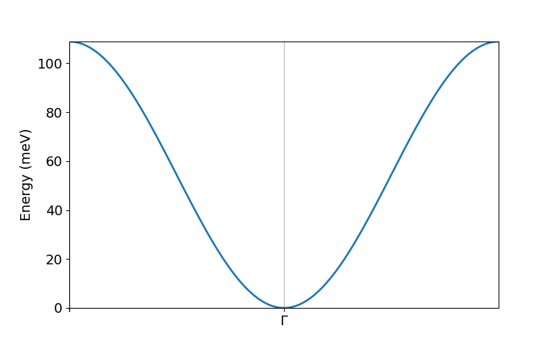
Adiabatic magnon spectra is output to the file ams.png
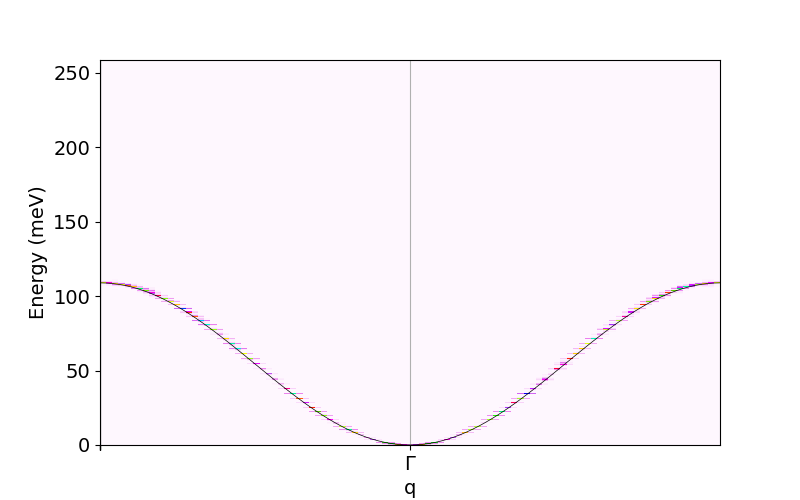
Adiabatic magnon spectra together with dynamic structure factor is output to ams_sqw.png.
Questions and exercises:
Does it follows the analytical expression predicted by Linear Spin Wave Theory?
The line width of the dynamical structure factor is narrow. Redo the calculation by increasing the value for the
dampingparameter to 0.01 or 0.1. How is the line width affected?
Exercise 2: AFM Heisenberg nearest-neighbour spin chain
Collinear adiabatic magnon spectra and S(q,w)
The following tutorial shows every step necessary to calculate the spin wave spectrum and S(q,w) through the simple example of the antiferromagnetic spin chain. Notice that AMS in this case does not work for the primitive unit cell and it is necessary to set up a 1x1x2 magnetic supercell of from the crystal unit cell and define both spin directions in the supercell. The chain has 200 spins along the z direction. Files are found in HeisChainAF folder.
Crystal & magnetic structure
Using the lines below with the indicated files, the crystal and magnetic structure are readily available, so that an 1D AFM Heisenberg chain is created. Have a look on the posfile and momfile. The nearest neighbor antiferromagnetic exchange coupling is contained in the jfile.
simid HeisWire
ncell 1 1 100 System size
BC 0 0 P Boundary conditions (0=vacuum,P=periodic)
cell 1.00000 0.00000 0.00000
0.00000 1.00000 0.00000
0.00000 0.00000 2.000000
Sym 1 Symmetry of lattice (0 for no, 1 for cubic, 2 for 2d cubic, 3 for hexagonal)
posfile ./posfile
exchange ./jfile
momfile ./momfile
do_prnstruct 1 Print lattice structure (0=no, 1=yes)
maptype 2 1=cartessian coordinates, 2=Direct coordinates

Crystal and magnetic texture
Spin dynamics
Using the lines below, the systems is driven to the ground state by spin dynamics.
ip_mode S Initial phase parameters
ip_nphase 1
20000 1.0e-3 1e-16 4.0
mode S S=SD, M=MC
temp 1.0e-3 Measurement phase parameters
damping 0.0010 --
Nstep 45000 --
timestep 1.000e-15 --
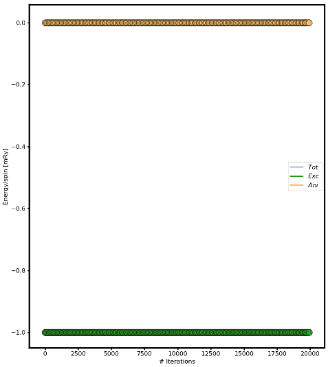
Energy versus number of iterations
Spin wave spectrum
We calculate the spin wave spectrum (in this case, a collinear adiabatic magnon spectra) at the list of Q points (qfile).
do_ams Y Collinear Adiabatic magnon spectra
do_magdos N Generate magnon density of states
qpoints D Flag q-point generation(F=file,A=automa.,C=full cell,D=external
file with direct coordinates)
qfile ./qfile Path along the high symmetry points in the reciprocal space
Plotting adiabatic magnon spectrum in the framework of Linear Spin Wave Theory
Use the UppASD graphical interface asd_gui or the script enclosed in this course (plotsqw_course). Use option 2. File to print out “ams.HeisWire.out”.
Use only the primitive cell.
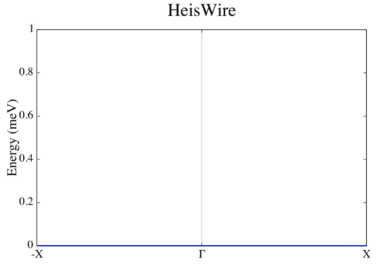
Fig 6. Adiabatic magnon spectra.
Use the magnetic supercell 1x1x2 of the crystal cell
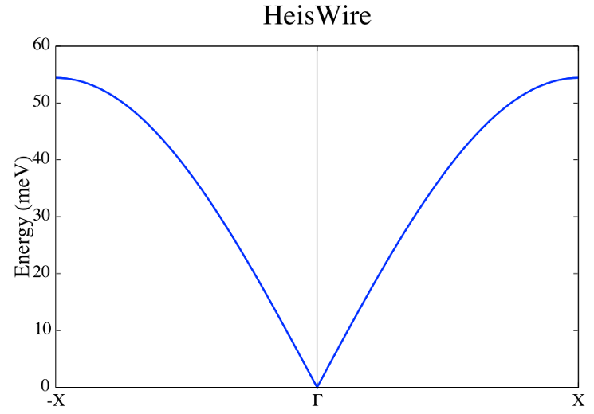
Fig 7. Adiabatic magnon spectra.
Plotting S(q,w)
Use the UppASD graphical interface asd_gui or the script enclosed in this course (plotsqw_course). Use option 1 for S(q,w) or option 3 for S(q,w) with AMS. File to print out “sqw.HeisWire.out”.
do_sc Q Measure spin correlation
sc_window_fun 2 Choice of FFT window function (1=box, 2=Hann, 3=Hamming, 4=Blackman-Harris)
sc_nstep 3000 Number of steps to sample
sc_step 15 Number of time steps between each sampling
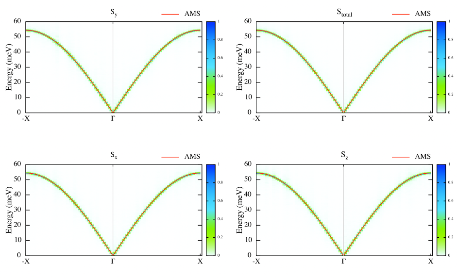
Fig 8. Structure factor with AMS.
Questions and exercises:
Does it follows the analytical expression predicted by Linear Spin Wave Theory? Why is linear around the center zone?
Calculate analytically the Energy/spin and show it is the same as the numerical result.
Exercise 3: bcc Fe at different temperature
Collinear magnon spectra and influence of uniaxial anisotropy
This example shows how to calculate the spin wave spectrum of the standard example bcc Fe and to understand the influence of the temperature on the spectra together with the influence of the uniaxial anisotropy. Files are found in the bccFeT1K and bccFeT300K folders.
Spin wave scripts
Even though the calculation of magnon spectra will be practiced on in more detail enough,
one can also use the setup above to quickly showcase the functionality of the preQ.py and postQ.py scripts.
These scripts are available in the repository but are continiously evolving. Up-to-date scripts are provided here: preQ.py and postQ.py
Use the
preQ.pyscript to setup a k-space path for the spin wave dispersion in bcc Fe, run the system, and plot the resultingams.pngby usingpostQ.py.
- Optional:
The
preQ.pyscript provides several k-space paths. Compare the calculated magnon DOSmagdos.bccFe100.outwhen using eitherqpoints Dandqfile ./qfile.kpathorqpoints Randqfile ./qfile.reduced.
Crystal & magnetic structure
Using the lines below with the indicated files, the crystal and magnetic structure are readily available, so that a simulation of an Fe bcc system is set up.
simid bccFe100
ncell 20 20 20 System size
BC P P P Boundary conditions (0=vacuum, P=periodic)
cell -0.5000000000 0.5000000000 0.5000000000
0.5000000000 -0.5000000000 0.5000000000
0.5000000000 0.5000000000 -0.5000000000
Sym 1 Symmetry of lattice (0 for no, 1 for cubic, 2 for 2d cubic, 3 for hexagonal)
posfile ./posfile
momfile ./momfile
exchange ./jASD2S
anisotropy ./kfile
maptype 2
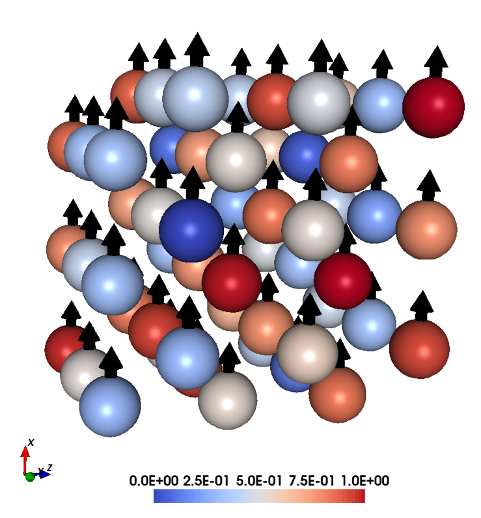
Fig 1. Lattice and magnetic texture.
Thermalizing the system
Using the lines below, the system is brought to thermal equilibrium by means of Heat bath Monte Carlo.
ip_mode H Initial phase parameters
ip_mcanneal 1 --
10000 1.0 1.00e-16 0.3 --
Linear spin wave spectra
Below the critical temperature bcc Fe has long range collinear ordering of spins. We calculate the adiabatic magnon spectra (AMS) using linear spin wave theory for collinear spin textures at the list of q points specified in the qfile.kpath. Note that the spin wave spectra is calculated for the T=0 K ground state as specified in the momfile. The list of q points were calculated from the preQ.py script which analyses the space group symmetry of the crystal cell.
do_ams Y Collinear Adiabatic magnon spectra
do_magdos Y Calculate magnon density of states
qpoints D Direct coordinates
qfile ./qfile.kpath q points
The first Brillouin zone of a body centered cubic lattice
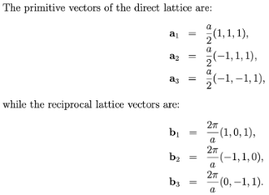
Fig 3. Primitive and reciprocal lattice vectors in bcc.
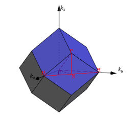
Fig 4. BCC 1st Brillouin zone.

Fig 5. High symmetry points.
Plotting the spectrum
Use the UppASD graphical interface ``asd_gui`` or the postQ.py script to plot the linear spin wave spectra and the dynamical structure factor.
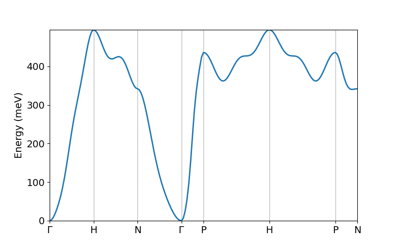
Fig 6. Adiabatic magnon spectra
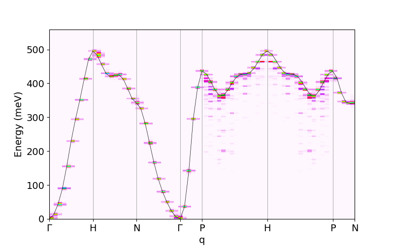
Fig 7. Adiabatic magnon spectra and dynamic structure factor sampled at T=1 K
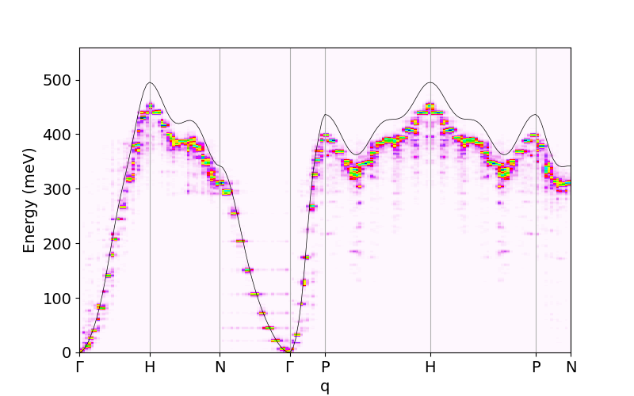
Fig 8. Adiabatic magnon spectra and dynamic structure factor sampled at T=300 K
Questions and exercises:
Why is there a small energy gap at the Gamma point?
Compare the dynamical structure factor for T=1 K and T=300 K. How do they differ?
Exercise 4: Kagome system with DM interactions
Non-Collinear adiabatic magnon spectra and S(q,w)
The following tutorial serves as introduction to non-collinear AMS when the unit cell is commensurate with the magnetic unit lattice. It shows every step necessary to calculate non-collinear spin wave spectrum and S(q,w). Files are found in Kagome_ncAMS folder.
Crystal & magnetic structure
Using the lines below with the indicated files, the crystal and magnetic structure are readily available, so that an Kagome system with DM interaction is created. Have a look to posfile and momfile, etc.
simid kagome_T
ncell 66 66 1
BC P P 0
cell 1.000000000000 0.000000000000 0.000000000000
-0.500000000000 0.866025403784 0.000000000000
0.000000000000 0.000000000000 10.00000000000
Sym 0
posfile ./posfile
posfiletype D C=Cartesian or D=direct coordinates in posfile
momfile ./momfile
exchange ./jfile
maptype 2
do_jtensor 1

Fig 1. Crystal and magnetic texture.
Spin dynamics
Using the lines below, and using a momfile with previous minimization, the system is already in the ground-state. This is just to speed up the simulation time.
ip_mode N
ip_mcanneal 2
10000 100.0001
10000 0.0001
mode S S=SD, M=MC
temp 0.0001
Nstep 60000
damping 0.001
timestep 1d-16
Spin wave spectrum
We calculate the non-collinear spin wave spectrum (in this case, a collinear adiabatic magnon spectra) at the list of Q points (qfile).
do_ams Y Collinear Adiabatic magnon spectra
do_diamag Y Non-Collinear Adiabatic magnon spectra
qpoints D Flag q-point generation(F=file,A=automa.,C=full cell,D=external
file with direct coordinates)
qfile ./qfile Path along the high symmetry points in the reciprocal space
The first Brillouin zone of a hexagonal lattice
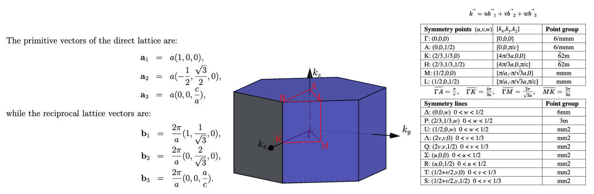
Fig 2. Primitive and reciprocal lattice vectors in hcp with 1st Brillouin zone and High symmetry points.
Plotting adiabatic magnon spectrum in the framework of Linear Spin Wave Theory
Use the UppASD graphical interface asd_gui or the script enclosed in this course (plotsqw_course). Use option 4. File to print out “ncams.kagome_T.out”.
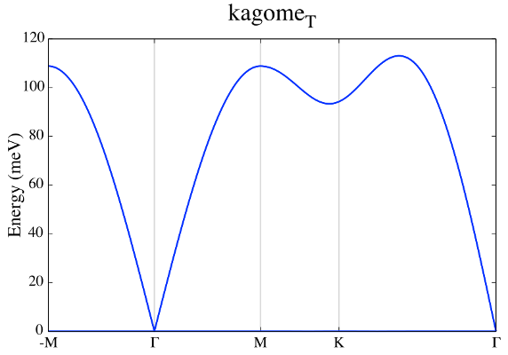
Fig 3. Non-Collinear AMS.
Plotting S(q,w)
Use the UppASD graphical interface asd_gui or the script enclosed in this course (plotsqw_course). Use option 1 for S(q,w), option 4 for S(q,w) with NC_AMS. File to print out “ncams.kagome_T.out” and “sqw.kagome_T.out”.
do_sc Q
sc_nstep 500
sc_step 90
do_sc_local_axis B Perform SQW along local quantization axis (SA) (Y/N/B)
B--> B_effxSA
sc_window_fun 2 Choice of FFT window function (1=box, 2=Hann, 3=Hamming,
4=Blackman-Harris)
sc_average N Averaging of S(q,w): (F)ull, (E)ven, or (N)one
do_sc_tens N Print the tensorial values s(q,w) (Y/N)
qpoints D
qfile ./qfile
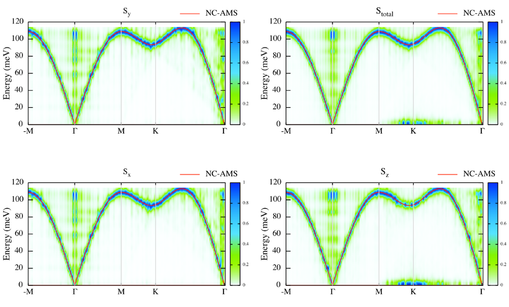
Fig 4. Structure factor together with non-Collinear AMS.
Questions and exercises:
Is there only one branch?
Seems linear around Gamma point but J is FM? Why is that? Shouldn´t be parabolic?
Exercise 5: Triangular system with AFM interactions
Non-Collinear adiabatic magnon spectra and S(q,w)
The following tutorial serves as how to use non-collinear AMS for systems that are not commensurate with the magnetic unit cell. It shows every step necessary to calculate non-collinear spin wave spectrum and S(q,w). Files are found in Triangular_ncAMS folder.
Crystal & magnetic structure
Using the lines below with the indicated files, the crystal and magnetic structure are readily available, so that an AFM triangular lattice is created. Have a look to posfile and momfile, etc.
simid triang_T
ncell 66 66 1
BC P P 0
cell 1.000000000000 0.000000000000 0.000000000000
-0.500000000000 0.866025403784 0.000000000000
0.000000000000 0.000000000000 10.00000000000
Sym 3 Symmetry of lattice (0 for no, 1 for cubic, 2 for 2d cubic, 3 for hexagonal)
posfile ./posfile
posfiletype D C=Cartesian or D=direct coordinates
momfile ./momfile
exchange ./jfile
maptype 2
do_jtensor 1
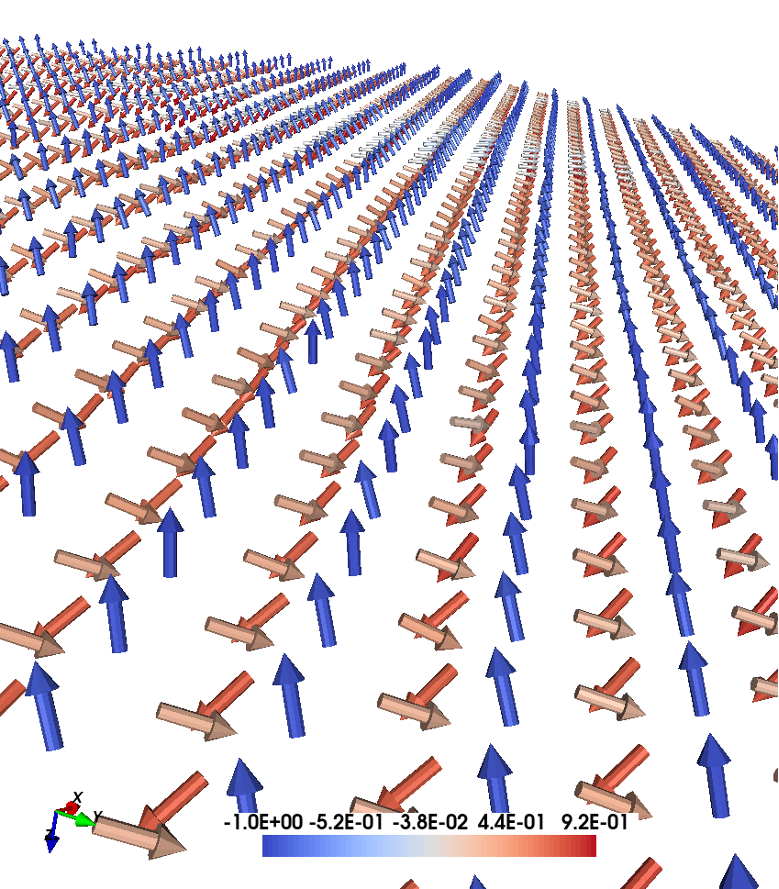
Fig 1. Crystal and magnetic texture.
Spin dynamics
Using the lines below the system is evolved in time. Notice that in the initial phase, we use a minimization of the spin-spiral energy, and by doing that, the ordering wave vector is calculated. In a second calculation, the adiabatic magnon spectra is calculated by using the already calculated ordering wave vector of the spin spiral based on the direction provided by the spin vector qm_svec and qm_nvec which is perpendicular to the given spin direction.
ip_mode Q Activate qminimizer
minimize spin-spiral energy
calculate ordering wave vector, etc.
ip_nphase 1
50000 0.00000 1.0e-16 5.0
10000 300.0001 1.0e-16 5.0
10000 100.0001 1.0e-16 5.0
10000 10.0001 1.0e-16 5.0
20000 1.0001 1.0e-16 5.0
50000 0.00000 1.0e-16 5.0
mode S S=SD, M=MC
temp 0.1
Nstep 59500
damping 0.001
timestep 1e-16
qm_nvec 0 0 1 Unit-vector perpendicular to spins
qm_svec 0 1 0 Direction of the spin
Spin wave spectrum
We calculate the non-collinear spin wave spectrum (in this case, a collinear adiabatic magnon spectra) at the list of Q points (qfile).
do_diamag Y Non-Collinear Adiabatic magnon spectra
qpoints D Flag q-point generation(F=file,A=automa.,C=full cell,D=external
file with direct coordinates)
qfile ./qfile Path along the high symmetry points in the reciprocal space
nc_qvect 0.330000 0.571577 0.000000 Ordering wave vector
nc_nvect 0.0 0.0 1.0 Pitch-vector along z and the moments rotate
in the xy-plane
qm_nvec 0 0 1 Unit-vector perpendicular to spins
qm_svec 0 1 0 Direction of the spin
The first Brillouin zone of a hexagonal lattice

Fig 2. Primitive and reciprocal lattice vectors in hcp with 1st Brillouin zone and High symmetry points.
Plotting adiabatic magnon spectrum in the framework of Linear Spin Wave Theory
Use the UppASD graphical interface asd_gui or the script enclosed in this course (plotsqw_course). Use option 7. File to print out “ncams.kagome_T.out”, “ncams+q.triang_T.out” and “ncams-q.triang_T.out”
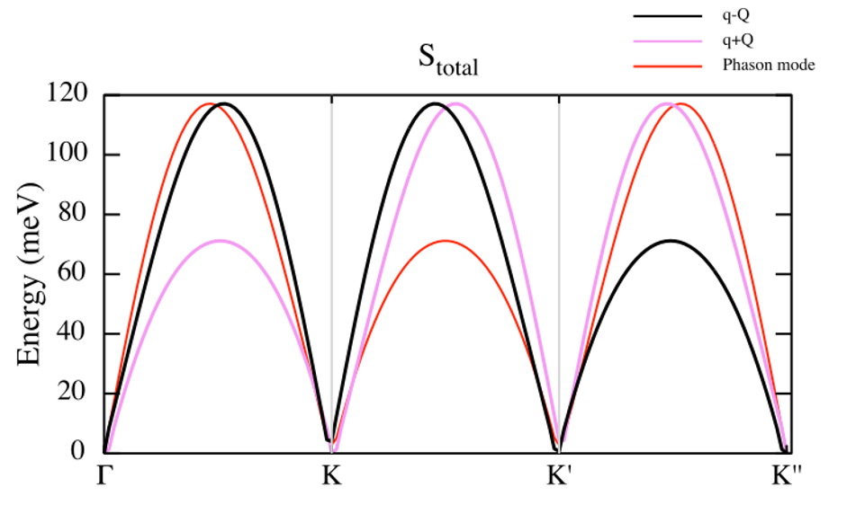
Fig 3. Non-Collinear AMS.
Plotting S(q,w)
Use the UppASD graphical interface asd_gui or the script enclosed in this course (plotsqw_course). Use option 1 for S(q,w), option 6 for S(q,w) with NC_AMS+Q. File to print out “ncams.kagome_T.out”, “sqw.kagome_T.out”,” ncams+q.triang_T.out” and “ncams-q.triang_T.out”.
do_sc Q
sc_nstep 700
sc_step 85
do_sc_local_axis B Perform SQW along local quantization axis (SA) (Y/N/B)
B--> B_effxSA
sc_window_fun 2 Choice of FFT window function (1=box, 2=Hann, 3=Hamming,
4=Blackman-Harris)

Fig 4. Structure factor together with non-Collinear AMS with non-zero ordering wave vector.
Questions and exercises:
Why we have 3 branches, with just 1 atom per unit cell?
Is it the profile of an antiferromagnet around the Gamma point?
Some preliminary and useful equations:
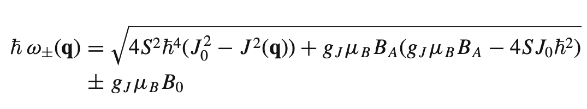
Eq 1. Excitation energy for spin waves in an anisotropic antiferromagnet.

Eq 2. Energy gap due to the anisotropy.
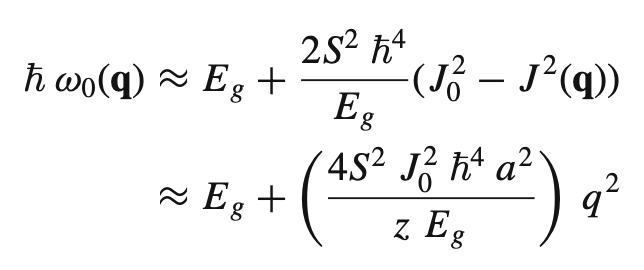
Eq 3. Excitation energy for spin waves in an anisotropic ferromagnet.
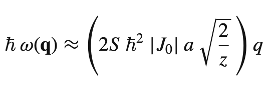
Eq 4. Excitation energy for spin waves in an isotropic antiferromagnet.
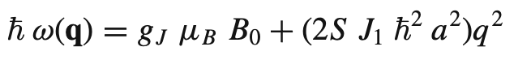
Eq 5. Excitation energy for spin waves in an isotropic ferromagnet.
Exercise 6: Spin wave stiffness
The spin wave stiffness and the related property exchange stiffness provides the bridge between atomistic spin dynamics and micromagnetism.
A setup for bcc Fe where the stiffness can be calculated can be seen below
simid bccFe100
ncell 36 36 36 System size
BC P P P Boundary conditions (0=vacuum, P=periodic)
cell -0.5000000000 0.5000000000 0.5000000000
0.5000000000 -0.5000000000 0.5000000000
0.5000000000 0.5000000000 -0.5000000000
Sym 1 Symmetry of lattice (0 for no, 1 for cubic, 2 for 2d cubic, 3 for hexagonal)
posfile ./posfile
posfiletype D
momfile ./momfile
exchange ./jASD2S
Initmag 3 Initial config of moments (1=random, 2=cone, 3=spec., 4=file)
do_avrg Y Measure averages
do_cumu Y
plotenergy 1
do_ams Y
do_magdos Y
qpoints D
qfile ./qfile.kpath
do_stiffness Y
eta_max 12
eta_min 6
alat 2.87e-10
Notice that we actually have no ip_mode nor mode sections, because here we are actually not interested in running any simulation.
The posfile and momfile are here as follows
1 1 0.000000 0.000000 0.000000
1 1 2.2459 0.0 0.0 1.0 0.0
The exchange interaction file jASD2S can be downloaded from here .
Calculate the spin wave stiffness for the system and examine how the results depend on the choice of
eta_maxandeta_min.
The output from the stiffness calculations are found in the asd_micro.bccFe100.out file.